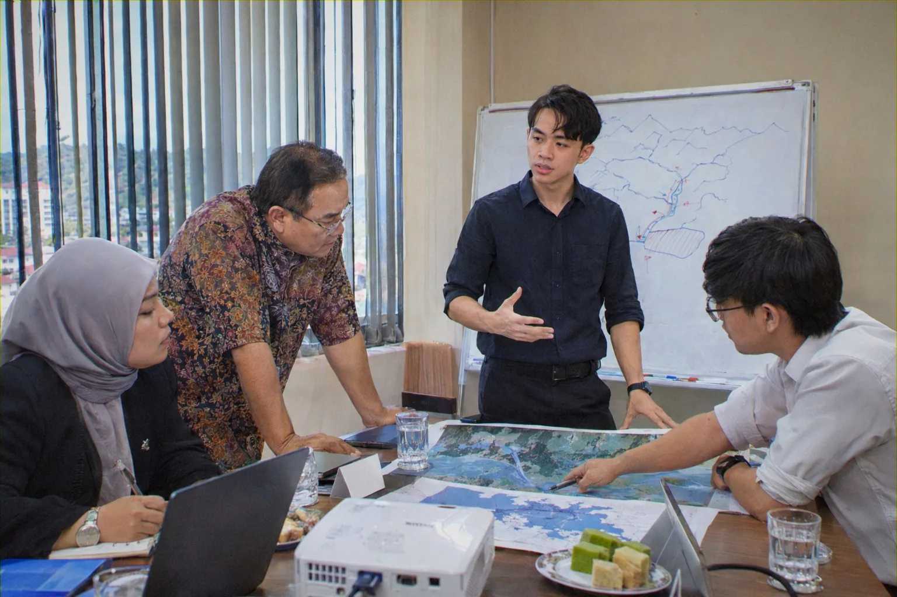

UMS
Universiti Malaysia Sabah
Home university in Kota Kinabalu with the faculties, students and field-station access BorneoStack would draw on for Kinabatangan hydrology and Danum canopy work.
www.ums.edu.myWe bring a finished, open result to every first conversation, then grow the work project by project.
Final-year and internship projects on flood mapping, mangrove change or AI code auditing, with data, compute and weekly supervision from the lab.
A scoped, 6–8 week study on a question you already have, delivered as an open notebook your own team can re-run.
Your field records validate our maps; our maps extend your records across the landscape. Credit and data rights agreed in writing first.
We apply for research and innovation grants with partners, and report every output openly.


We share a finished case study and listen to your question.
A one-page scope: who does what, data rights, credit.
A small joint output, published openly, in weeks not months.
For longer work, using the partner’s own agreement templates.
Researched from each organisation’s own website. Every entry is prospective: no agreement exists yet. Logos appear only after a signed agreement and written permission to use them.
Home university in Kota Kinabalu with the faculties, students and field-station access BorneoStack would draw on for Kinabatangan hydrology and Danum canopy work.
www.ums.edu.myTropical biodiversity and forest ecology institute, a natural partner for ground-truthing Danum Valley canopy remote sensing.
www.ums.edu.my/ibtpUMS computing faculty: the route to student co-supervision and shared work on applied AI, sensing pipelines and AI code auditing.
fki.ums.edu.myMarine and coastal science institute at UMS, relevant to mangrove mapping and coastal validation data.
www.ums.edu.my/imbSister Bornean university whose resource-science and engineering groups overlap with peatland, mangrove and river-sensing methods across the island.
www.unimas.myCardiff University and Sabah Wildlife Department field centre on the Lower Kinabatangan, directly on BorneoStack's flood and hydrology sensing site.
www.danaugirang.com.myRuns the Danum Valley and Maliau research platforms, the practical gateway for canopy remote-sensing fieldwork and permits.
www.searrp.orgKinabatangan-based orangutan and wildlife research NGO, a field partner on the same river corridor.
hutan.earthRuns Sabah conservation and Kinabatangan landscape programmes and could use mangrove and canopy maps.
www.wwf.org.mySabah conservation and sustainability network that convenes the NGOs and agencies BorneoStack would need to reach.
www.foreversabah.orgState flood-forecasting and river-gauge authority, the key source for Kinabatangan water-level data and a likely end user of flood alerts.
did.sabah.gov.myState agency that regulates research access and biodiversity data in Sabah, relevant to permits and data sharing for any field sensing study.
sabc.sabah.gov.myRegulator for environmental impact assessments and water quality, a potential user of mangrove and river-monitoring outputs.
epd.sabah.gov.myManages Kinabalu Park, Tun Mustapha Park and other protected areas where canopy and mangrove mapping could be applied.
www.sabahparks.org.myCo-manages the Kinabatangan wildlife sanctuary and partners Danau Girang, so its habitat and flood-risk concerns shape the sensing work.
wildlife.sabah.gov.myManages Sabah's forest reserves including Danum Valley's surrounds, the main end user for canopy and forest-cover mapping.
forest.sabah.gov.myHolds the Danum Valley Conservation Area concession through its forestry arm, a stakeholder for access and canopy research.
www.yayasansabahgroup.org.myRegional development authority whose corridor plans cover the Kinabatangan and east coast, relevant to funding and flood-resilience programmes.
sedia.com.myNational source of rainfall, radar and forecast data that would feed Kinabatangan flood models.
www.met.gov.myNational hydrology research institute, relevant to river-basin modelling and climate-impact flood studies.
www.nahrim.gov.myNational digital agency with grants and programmes for AI startups, relevant to funding BorneoStack's AI code auditing.
www.mdec.myMalaysian deep-tech and startup funder offering seed grants for early-stage applied AI ventures.
www.cradle.com.myTechnology commercialisation accelerator that could host or fund sensing and AI pilots.
mranti.mySource of free Sentinel-1 and Sentinel-2 imagery used for flood extent, mangrove and canopy mapping.
Data source www.copernicus.eu/enOpen access to GEDI lidar, Landsat and MODIS data for Danum canopy structure and wetland monitoring.
Data source www.earthdata.nasa.govProvides ALOS PALSAR radar and AW3D elevation data, key for flood and mangrove mapping through cloud cover.
Data source www.eorc.jaxa.jp/ALOSOpen forest-loss and land-cover alerts to benchmark BorneoStack's canopy and mangrove products against.
Data source www.globalnaturewatch.orgReference global mangrove extent and change dataset to validate and extend Sabah mangrove maps.
Data source www.globalmangrovewatch.orgTell us which question you are working on. We will come back with a scoped, open first step.